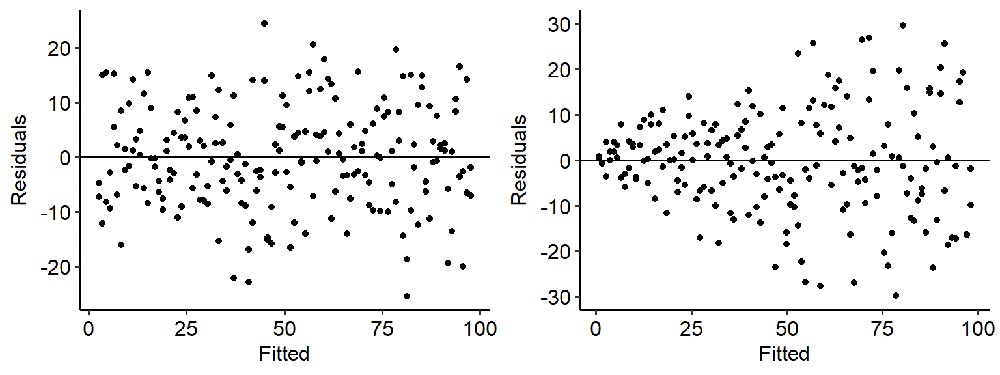
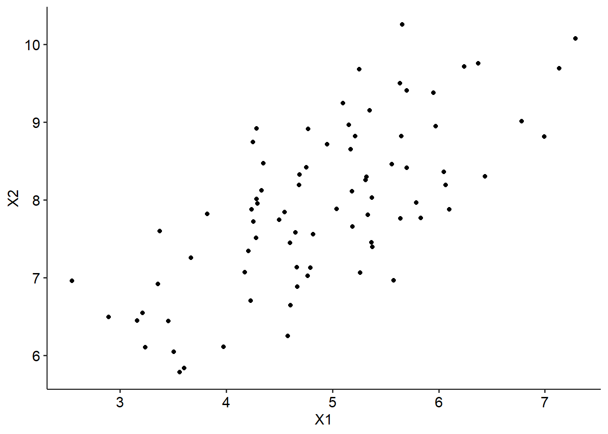
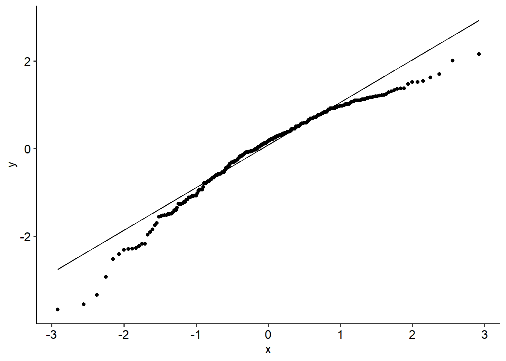

10.2 ANCOVAs
10.2.1 Introduction
ANCOVA stands for Analysis of Co-variance. Its basic definition is that it is an ANOVA, but with the inclusion of a covariate (or a variable we need to control for). The basic idea is that we are performing an ANOVA between our predictors and outcomes after adjusting our predictors (our model) by another variable.
Just like the ANOVA, ANCOVA is a fairly generic term that can refer to a multitude of analyses. In this book we’ll stick with ANOVAs relating to between-subjects predictors only.
10.2.2 Example
The following data comes from Plaster (1989). The dataset is described as below:
Male participants were shown a picture of one of three young women. Pilot work had indicated that the one woman was beautiful, another of average physical attractiveness, and the third unattractive. Participants rated the woman they saw on each of twelve attributes. These measures were used to check on the manipulation by the photo. Then the participants were told that the person in the photo had committed a Crime, and asked to rate the seriousness of the crime and recommend a prison sentence, in Years.
Our main questions are:
- Does the perceived attractiveness of the “defendant” (the women in the photo) influence the number of years the mock juror (the participant) sentence them for?
- How does this relationship change after controlling for the perceived seriousness of the crime?
Our dataset, jury_data, contains the following variables:
- Attr: The perceived attractiveness of the defendant (Beautiful, Average, Unattractive)
- Crime: The crime that was commited by the defendant (Burglary, Swindle)
- Serious: The perceived seriousness of the crime from 1-10
- Years: The number of years the participant sentenced the defendant for
10.2.3 One-way ANCOVA
To start us off, let’s begin with a simple one-way ANOVA between attractiveness and years. We can see this below.
## Df Sum Sq Mean Sq F value Pr(>F)
## Attr 2 70.9 35.47 2.77 0.067 .
## Residuals 111 1421.3 12.80
## ---
## Signif. codes: 0 '***' 0.001 '**' 0.01 '*' 0.05 '.' 0.1 ' ' 1## For one-way between subjects designs, partial eta squared is equivalent to eta squared.
## Returning eta squared.From this we can infer that the effect of attractiveness is not significant (F(2, 111) = 2.77, p = .067, \(\eta^2\) = .05, 95% CI = [0, .14]). In other words, perceived attractiveness does not appear to relate to the years of sentencing.
Let’s now add the covariate Serious in. To do this in R, we simply add in the predictor to the aov model just like we would with adding a second predictor in a multiple regression - by specifying IV + covariate within the relevant function. See below for two ways of running an ANCOVA:
# One way using car::Anova - this is useful for getting the correct eta squared confidence intervals
options(contrasts = c("contr.helmert", "contr.poly"))
jury_acov <- aov(Years ~ Attr + Serious, data = jury_data)
jury_acov_sum <- car::Anova(jury_acov, type = 3)
jury_acov_sum# Another way using rstatix
jury_data %>%
anova_test(Years ~ Attr + Serious, effect.size = "pes", type = 3)What do we see? Well, the main effect of attractiveness is now significant (F(2, 110) = 3.87, p = .024, \(\eta^2_p\) = .07, 95% CI = [0, .16]). The effect of the covariate is also significant (F(1, 110) = 40.31, p < .001, \(\eta^2_p\) = .27, 95% CI = [.14, .39]).
What’s actually going on here? Well, the first model showed us that by itself, attractiveness was not a significant part of the model. However, once we factored in the effect of Seriousness (and more importantly, controlled for it) we saw that Attractive did in fact relate to the sentence length. Unsurprisingly, the seriousness of the crime also predicted sentence length.
10.2.4 Assumptions
By and large, the assumptions required for an ANCOVA are the same as that of a regular ANOVA. However, there are two new ones in bold below:
- Normality of residuals
- Homogeneity of variances
- Linearity of the covariate
- Homogeneity of regression slopes
Let’s check each of these below.
First, the normality of residuals can simply be tested as in the usual way. Our residuals are not normally distributed in this model (W = .97, p = .006).
##
## Shapiro-Wilk normality test
##
## data: jury_acov$residuals
## W = 0.96616, p-value = 0.005529The homoegeneity of variance assumption is also largely tested in the same way. Our homogeneity of variance assumption also isn’t met (F(2, 111) = 5.68, p = .004)…
## Warning in leveneTest.default(y = y, group = group, ...): group coerced to factor.10.2.5 Linearity of the covariate
A third assumption tests whether the covariate is linearly related to the DV. This assumption is essentially similar to the linearity assumption in a regression model - because we are still dealing with linear models, our covariates must also be linearly related to our outcome.
This is simple enough to test just by visualising the relationship. In general, this assumption appears to hold - it looks like there’s a vague linear relationship in there.
(Note that due to the data being in integers - i.e. whole numbers - I’ve used geom_jitter() in place of geom_point() to help visualise this a bit better.)
jury_data %>%
ggplot(
aes(x = Serious, y = Years)
) +
geom_jitter() +
labs(x = "Perceived seriousness of crime", y = "Sentence length (Years)")
Finally, the homogeneity of regression slopes assumption specifies that for each group, the slope of the relationship between the covariate and the dependent variable are the same. To test this, we need to run an ANOVA that allows for an interaction between the predictor and covariate.
Uh oh - this isn’t good. A significant interaction suggests that the slope of the relationship between Serious and Years differs for each level of attractiveness, as indicated by the significant interaction effect (p = .03). We can see as much if we fit separate regression lines to the scatterplot above:
jury_data %>%
ggplot(
aes(x = Serious, y = Years, colour = Attr)
) +
geom_jitter() +
labs(x = "Perceived seriousness of crime", y = "Sentence length (Years)") +
geom_smooth(method = lm, se = FALSE)## `geom_smooth()` using formula = 'y ~ x' As we can clearly see, the slopes are not identical for each group. In particular, the Unattractive group has a much stronger slope between seriousness and sentence length (indicating that unattractive people basically have it harder if they’re perceived to have committed more serious crimes).
Overall, given that many of our assumptions are not met - particularly the important one of homogeneity of regression slopes - this indicates that an ANCOVA isn’t a suitable model for our data. What would we do in this instance, then? We’d probably model a regression that allows for the interaction between attractiveness and seriousness.
A final note on ANCOVAs: naturally, we can extend an ANCOVA model to have multiple predictors and multiple covariates. In this instance, we would need to model multi-way interactions to test all of our effects and assumptions. Below is a lightly annotated example of a two-way ANCOVA using attractiveness and type of crime as predictors, seriousness as a covariate and sentence length as an outcome.
# Build two way ANCOVA
jury_twoway_acov <- aov(Years ~ Attr * Crime + Serious, data = jury_data)
# Normality of residuals
shapiro.test(jury_twoway_acov$residuals)##
## Shapiro-Wilk normality test
##
## data: jury_twoway_acov$residuals
## W = 0.96895, p-value = 0.009416# Linearity of covariate + homogeneity of regression slopes
jury_data %>%
ggplot(
aes(x = Serious, y = Years, colour = Attr)
) +
geom_jitter() +
labs(x = "Perceived seriousness of crime", y = "Sentence length (Years)") +
geom_smooth(method = lm, se = FALSE) +
facet_wrap(~Crime)## `geom_smooth()` using formula = 'y ~ x'